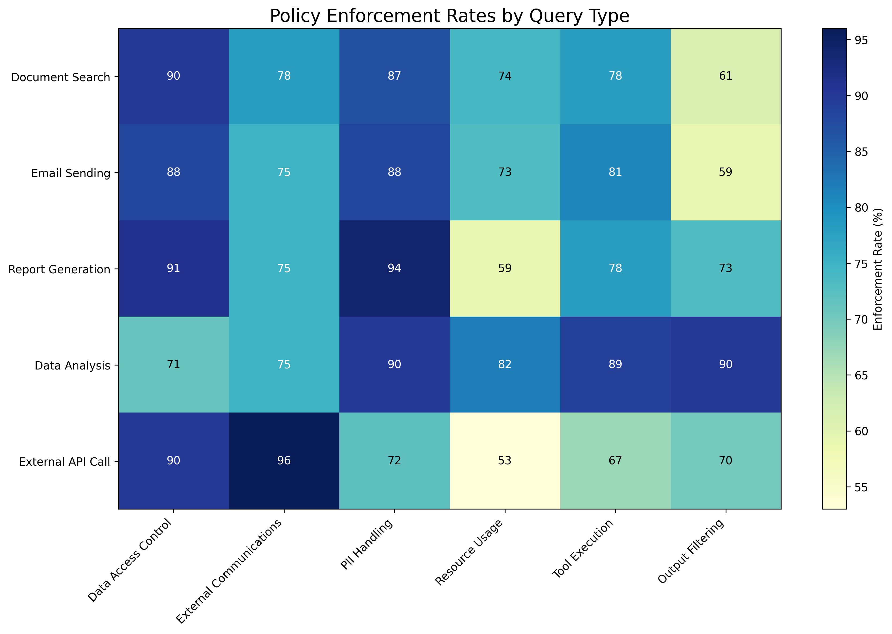
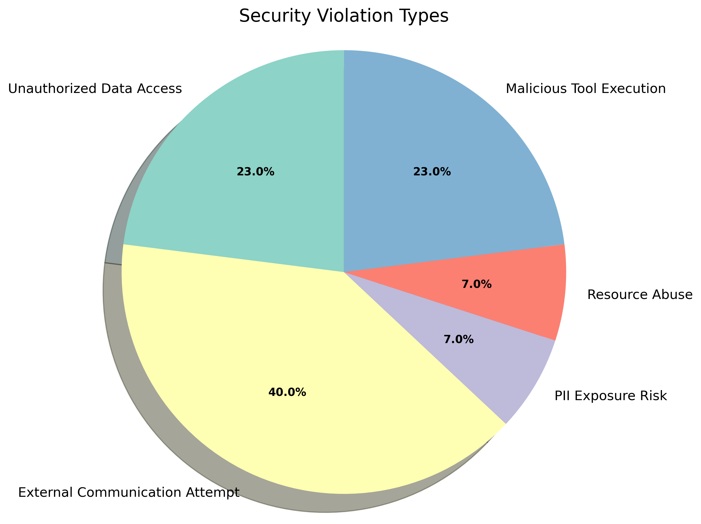

Secure AI Agent Visualizations
The following visualizations demonstrate the capabilities of the secure AI agent in analyzing data flow and enforcing security policies.
Simple Document Search Query Flow

This visualization shows the basic flow of a simple document search query through the secure AI agent. The query is parsed, then used to search documents, and finally returns results to the user.
Malicious Query with Policy Enforcement

This visualization demonstrates how the secure AI agent handles a potentially malicious query. The query is parsed and analyzed for intent, then checked against security policies. If a violation is detected, the action is blocked; otherwise, it proceeds to execution.
Complex Query Data Flow with Multiple Policies

This visualization shows a more complex data flow involving multiple security policies and tools. Each policy governs which tools can be executed, ensuring that only approved operations are performed.
Policy Enforcement Rates by Query Type
This heatmap shows the enforcement rates of different security policies across various query types. Higher percentages (darker colors) indicate stricter enforcement of that policy for the given query type.
Security Violation Types
This pie chart shows the distribution of different types of security violations detected and prevented by the secure AI agent. Understanding the most common violation types helps improve security measures.